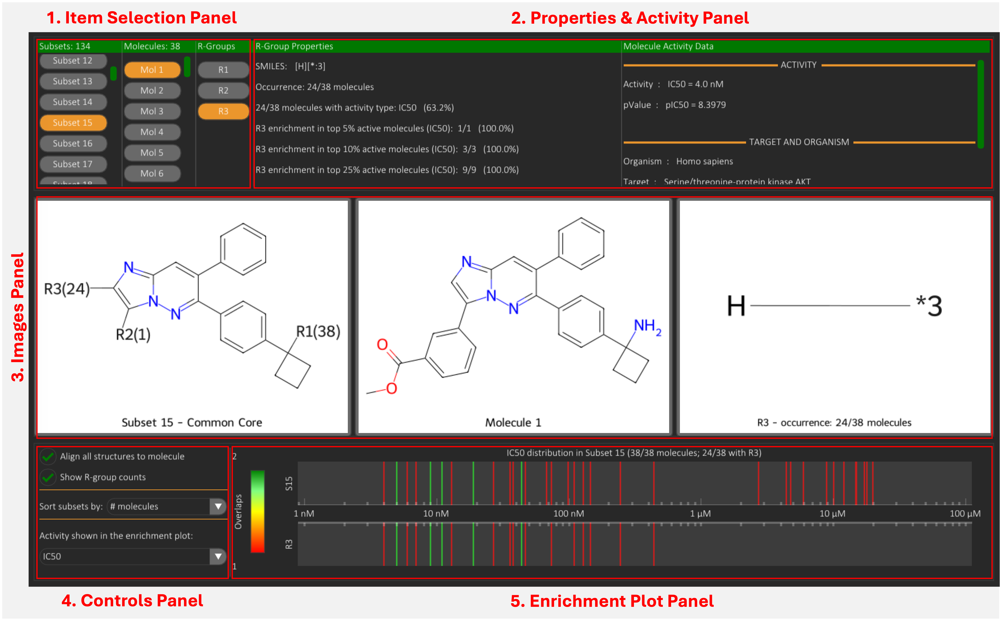
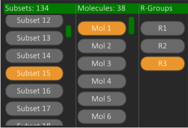
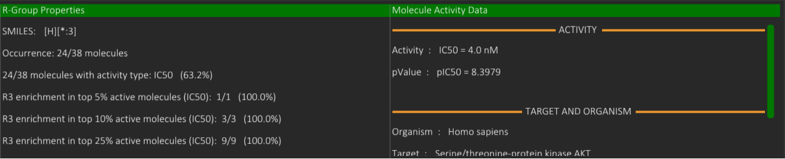
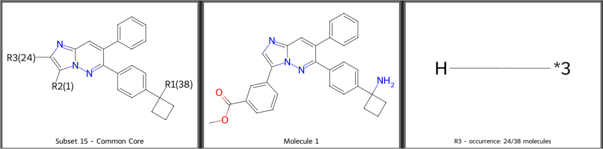
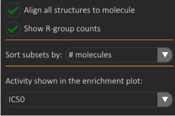
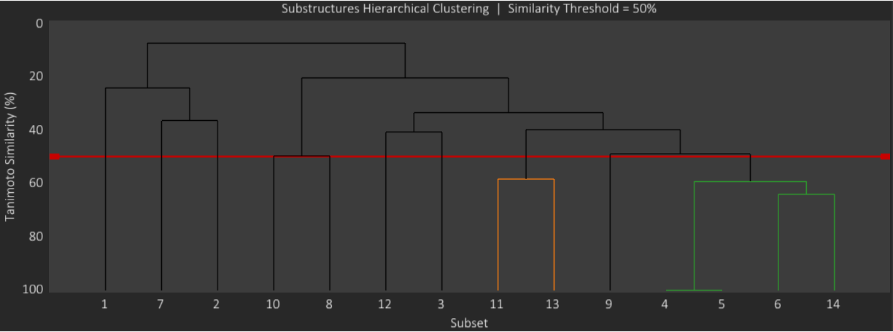
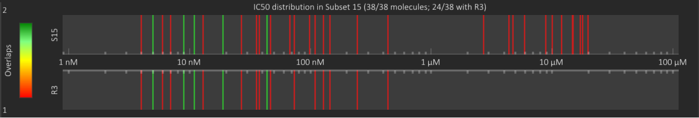
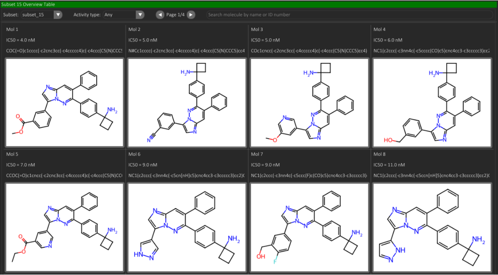

Overview
The Overview tab provides a high-level, interactive summary of both the dataset partitioning into molecular subsets based on shared core substructures, and the R-group decomposition of molecules belonging to the currently selected subset.

Decomposition
The decomposition sub-tab allows the exploration of the core and R-group decomposition of molecules within the selected subset.
Structure Images Visualization
Item Selection Panel
Allows selecting Subsets, Molecules, or R-groups for display. Selection is performed via dedicated UI buttons that update the adjacent Images and Properties & Activity panels. In this example, Subset 15, Molecule 1, and R-group R3 are selected.

Properties & Activity Panel
The Properties panel renders computed or stored metadata for the selected entity (subset, molecule, or R-group). The Activity panel reports the bioactivity record (or records) associated with the most recently selected molecule, including activity value, biological target, and assay classification. In this example, the properties of R-group R3 and activity data for Molecule 1 are shown.

Images Panel
Displays three horizontally arranged molecular depictions:
- Left: subset common core
- Center: last selected molecule
- Right: last selected R-group

Subset Sorting & Image Controls
Controls Panel

Provides image alignment and subset sorting options:
- Align all structures to molecule: Applies coordinate frame alignment of core and R-group images to the currently selected molecule depiction.
-
Show R-group counts:
Injects R-group population frequency into the subset common core image labels.
In the example,
R3(24)means that the R3 fragment of the selected molecule (H) is present in 24 molecules within the active subset. -
Sort subsets by:
Enables sorting the subset buttons list using one of three strategies:
- # molecules: rank by subset population size (descending).
- Query similarity: rank by Tanimoto similarity vs a user-provided SMILES query scaffold. Selecting this option reveals a SMILES input box (Query SMILES).
- Similarity Clustering: rank by hierarchical clustering of cores using Tanimoto similarity, visualised as a dendrogram (in the Images Panel). A movable threshold bar defines cluster membership: branches below the bar represent core clusters whose similarity exceeds the threshold. In the dendrogram depicted here, the threshold line is set at 50 (%). Two clusters of molecules are visible under the line: the first cluster (orange branch) containing two cores (11 and 13) and the second cluster (green branch) containing four cores (4, 5, 6 and 14).

- Activity shown in the enrichment plot: Activity type used for activity and R-group enrichment calculation and display (see the next Enrichment Plot section).
Enrichment Plot
Displays two 1D bar plots sharing the same X-axis coordinate space (activity range for the selected subset and for the activity type selected in the Activity shown in the enrichment plot combo box).
- Top plot: activity distribution for the full subset.
- Bottom plot: activity distribution restricted to molecules that contain the selected R-group at any position.
Bars are colour-encoded by positional density (number of overlapping molecules per X coordinate bin), using the colormap scale rendered at the left of the plots. Enrichment statistics are printed numerically inside the Properties panel when an R-group is selected.
In this example, the activity type is IC50, and the selected R-group is R3 = H. As visible in the plot title, 38/38 molecules in subset 15 have a recorded IC50 value, 24 of which contain the R-group R3 = H. As shown in the x-axis tick labels, the activity values in subset 15 range from 4 nM to 20 µM. The bottom plot shows that molecules containing the R-group R3 = H are enriched in the high-activity region (low IC50 values) of the subset activity distribution.

Subset Overview
The Subset Overview table can be viewed from the dedicated Subset Overview sub-tab. It renders a paginated grid of molecules belonging to the selected subset. Layout properties:
- 12 molecules per page
- Each page shows a 2D structure depiction + selected metadata fields
- Search by Name or MolID is supported
In this example, mol1-8 from subset 15 are displayed, showing MolID, IC50 and SMILES fields.
